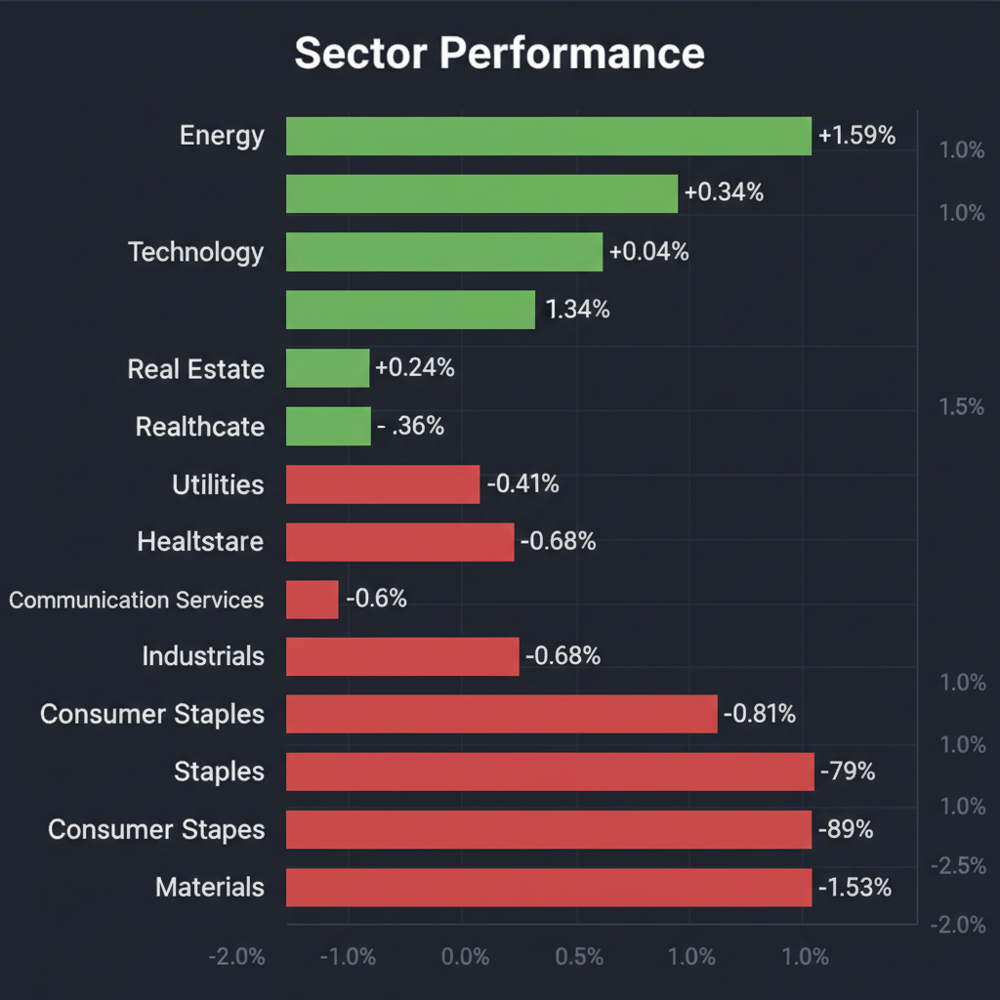
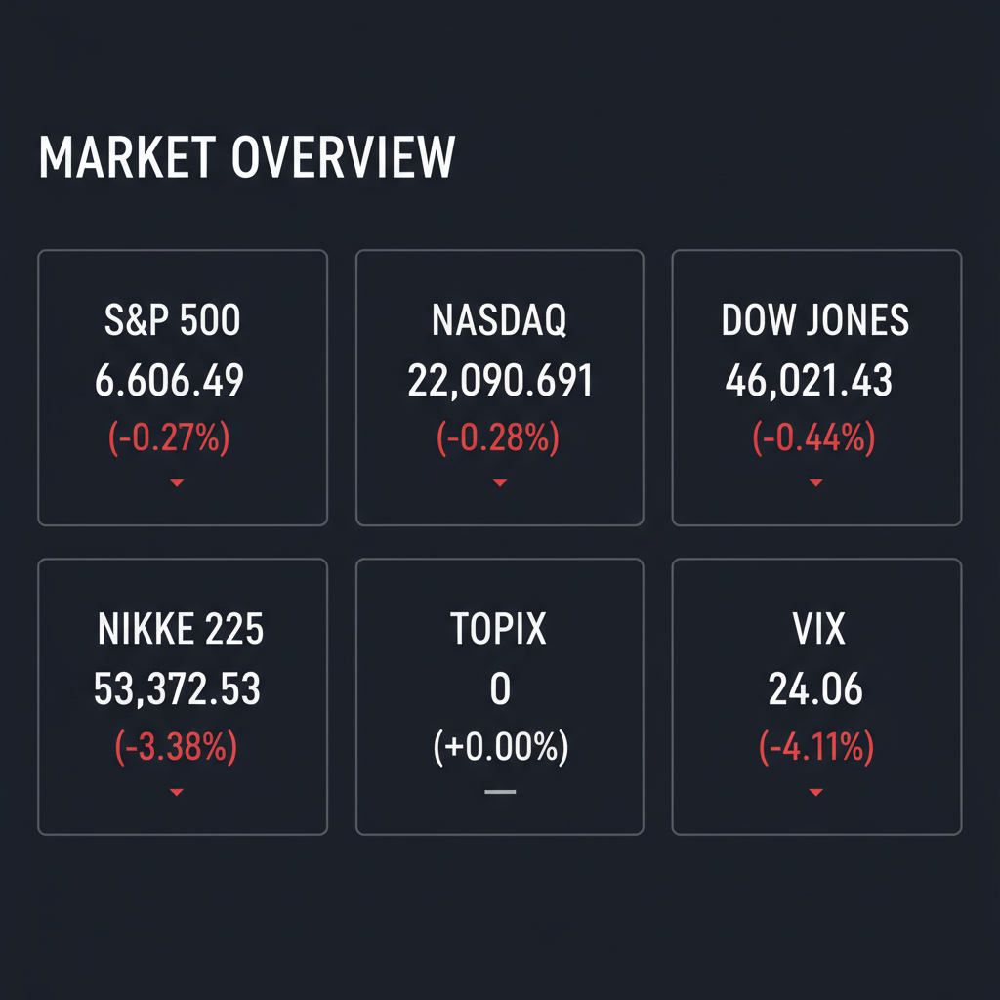

Daily Investment Report - 2026-03-20
Generated: 2026/3/20 8:13:49


本日の投資チームミーティングにおける各エージェントの分析と議論を統合した、投資家向けの最終レポートをお届けします。
1. エグゼクティブサマリー
- 中東の地政学リスクとFRBの独立性を巡る懸念から長期金利が上昇し、市場はVIX24超の高ボラティリティなリスクオフ局面に突入しています。
- 資金は金利感応度の高い不動産や景気敏感株から、エネルギー、防衛、あるいは現金や短期国債といった安全資産へ急速に逃避しています。
- 投資家はキャッシュ比率を高めて守りを固めつつ、PBR是正圧力のある日本のバリュー株や、明確な収益モデルを持つ一部の隠れた成長株への選別投資が求められます。
2. 注目銘柄リスト
強気（買い推奨）
- フジ・メディア・ホールディングス（フジHD） [中型株]: PBR0.5倍前後と極端に割安に放置されている中、村上ファンドの介入がPBR是正や自己資本利益率（ROE）改善の強力なカタリストとなり、下値不安が極めて限定的であるため。
- Firefly Aerospace [小型株・未上場/関連市場に波及]: 中東リスクによる宇宙防衛インフラ需要を背景に、市場予想を上回る好決算と2026年に向けた強気ガイダンスを提示しており、自力でキャッシュを生み出せる稀有な新興宇宙企業であるため。
- Xanadu Quantum Technologies (Crane Harbor Acquisition Corp.経由で上場予定) [超小型株]: 市場初の「上場光量子技術企業」として圧倒的な潜在市場（TAM）を持ちますが、SPAC特有のボラティリティがあるため、厳格な資金管理を前提とした初期の打診買いが有効なため。
中立（様子見）
- B&G Foods, Inc. (BGS) [中型株]: 1億1000万ドル規模の事業買収が即座にEPSとフリーキャッシュフローに寄与する点は評価できますが、過去の高レバレッジ体質を考慮し、負債削減の進捗を次回の決算で確認するまで様子見が妥当なため。
- 商船三井 [大型〜中型株]: アクティビスト（エリオット）による株主還元強化の要請はプラス材料ですが、グローバル景気減速による運賃下落リスクを抱える景気敏感株（シクリカル）であるため。
弱気（警戒）
- Freight Technologies, Inc. (FRGT) [超小型株]: 買収を通じた物流・クリーンエネルギーのテーマ性は魅力ですが、高金利環境下では恒常的な赤字による資金枯渇（キャッシュバーン）と株主価値希薄化のリスクが極めて高いため。
- EquipmentShare [小型株]: 企業単体の決算内容は堅調であったものの、外部調達に依存するビジネスモデルは高金利の直撃を受けやすく、セクター全体の連れ安リスクを払拭できないため。
- REIT（不動産投資信託）銘柄群 [セクター全般]: 荒れ相場でのインカムゲイン狙いの避難先として一部で注目されていますが、米長期金利の上昇と日銀の利上げ警戒から、調達コスト増と不動産評価損のダブルパンチを受ける致命的な罠となるため。
3. セクター推奨ランキング
中東の供給網再編やイランのエネルギー施設への攻撃リスクを背景に、インフレ再燃の直接的なヘッジとして機能し、テクニカル的にも強い上昇モメンタムを示しているため。
米国政府による中東への数十億ドル規模の武器売却承認など、マクロ環境の地政学リスクの悪化が、関連企業の直接的な収益押し上げ（EPS成長）に直結するため。
金利動向や景気サイクルに左右されにくいディフェンシブ性を持ち、特に肥満症治療薬（減量薬）などの強固な独自データを持つ企業が資金を集めやすいため。
- 最下位（回避推奨）：不動産セクター（REIT含む）
米国の30年固定住宅ローン金利が3ヶ月ぶりの高水準に達しており、資金調達コストの上昇がダイレクトに利益率と純資産価値（NAV）を圧迫するため。
4. 今週の注目イベント
- 3月24日頃：Pelican Acquisition Corporationの企業結合完了（SPAC市場のセンチメントを測る試金石）
- 日程随時：トランプ大統領によるパウエルFRB議長への司法省（DOJ）調査の進展、およびウォルシュ氏のFRB理事指名動向
- 日程随時：米国連邦議会におけるイラン紛争向け追加資金要請の審議
5. リスク要因
- FRBの独立性喪失とスタグフレーション： トランプ政権の圧力によりFRBのインフレ抑制機能が麻痺し、原油高と相まって「物価高・高金利・景気後退」が同時に襲い掛かるリスク。
- 流動性枯渇による連鎖的投げ売り： 有事の安全資産であるはずの金・銀の価格急落は、投資家が追証（マージンコール）回避のために手当たり次第に資産を売却している兆候であり、株式市場のフラッシュ・クラッシュを誘発する恐れ。
- 「円安＝日本株高」神話の崩壊： 米金利高止まりによる円安と原油高が日本の輸入コストを直撃し、海外投資家の猛烈なキャピタルフライト（直近約4,900億円の売り越し）がさらに加速するリスク。
- 赤字グロース・SPAC銘柄の倒産リスク： 高金利と資金収縮が続く中、自力でキャッシュを生み出せない企業の資金調達コストが限界に達し、株主価値がゼロになるリスク。
6. アクションアイテム
- ポジションの大幅縮小と現金化： 株式エクスポージャーを直ちに落とし、ポートフォリオ内のキャッシュ（現金）比率を40〜50%まで引き上げる。
- 短期国債への資金退避： 金利変動（デュレーション）リスクを極限まで排除しつつ流動性を確保するため、余剰資金を短期米国債（T-bills）へ振り向ける。
- 脆弱なポジションの損切り： 金利上昇の直撃を受ける不動産（REIT）や、利益の裏付けがない赤字中小型株、SPAC銘柄をポートフォリオから完全に排除する。
- 厳格なストップロスの設定： エネルギー（XLE）や防衛セクター、アクティビスト関連株を打診買いする場合は、直近安値のわずか下に必ず逆指値（ストップロス）注文を入れ、損失を最小化する。
- テールリスクヘッジの実行： S&P500やNASDAQに対するファー・アウト・オブ・ザ・マネー（OTM）のプットオプションを購入し、相場全体の同時暴落に対する保険をかける。